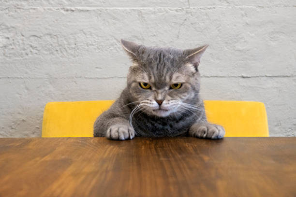
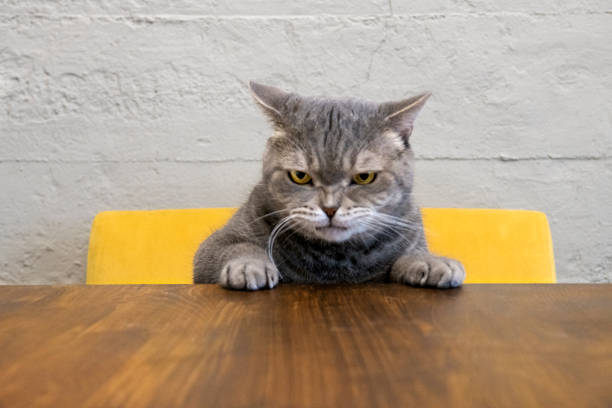
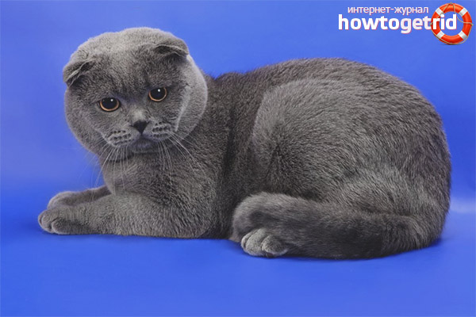
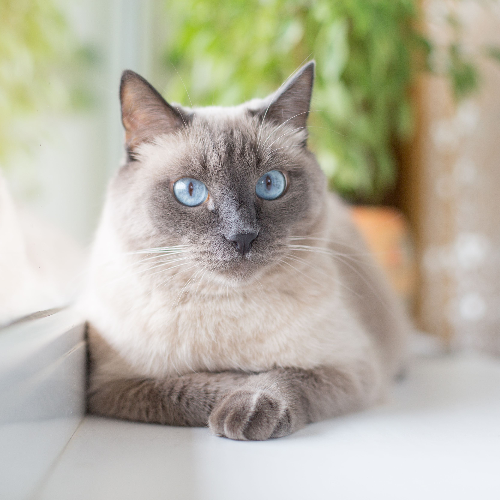
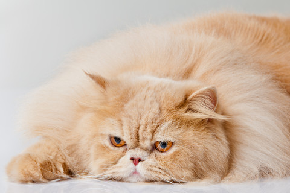
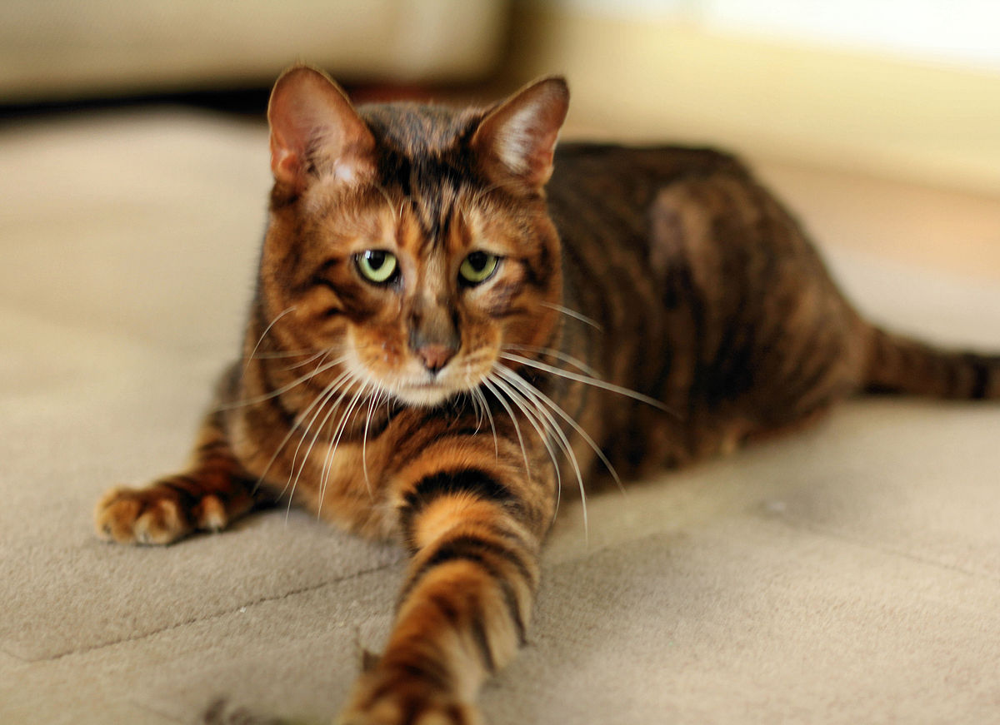

Introduction
This will be my first website that i try to do without any help. I will do a cute little page that is about different aspects of a cat. This page will include different catbreeds, some fun facts about cats, tips and tricks regarding cats and in the end some info about me as a new web developer.
Hope you enjoy!
Scottish fold cat
Facts about Scottish fold cats
- They sit like humans
- They're born with straight ears
- 12-14 year lifespan
More info here
Siamese cat
Facts about Siamese cats
- Were once "the fattest cat"
- They are temperature controlled
- 12-20 year lifespan
More info here
Perser cat
Facts about Perser cats
- They originate from Persia
- Their hair can grow up to 15cm
- 10-17 year lifespan
More info here
Toyger cat
Facts about Toyger cats
- Small version of Tiger
- They have glitter
- 12-15 year lifespan
More info here